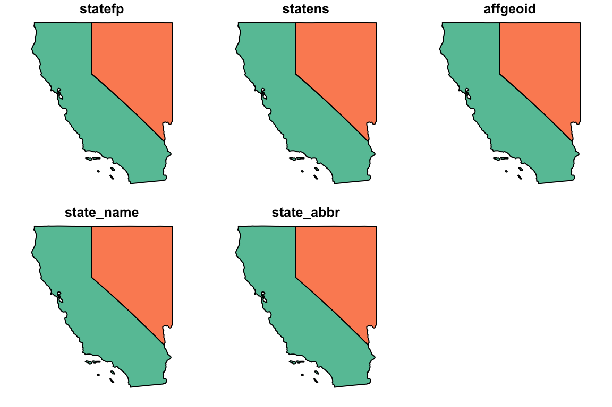

Finding and refining an AOI
One on the hardest aspects of defining an AOI is deciding on the query parameters (eg the location, width and height). To help with this the AOI package has a check function that can be used to define OR refine AOI queries.
If you have no idea about the constraints of your AOI you can run check() alone:
check()## NULL
Doing so brings up a map centered on the United States (panning is available). Zooming to your general AOI, you can use the tools in the lower left hand corner of the map to mark locations to get lat/long, and measure distances. These values can then be input directly into the getAOI() call.

Give it a try!
The check() function can also be chained to existing AOI call to immediately see the region being queried:
Using the tabs in the upper right corner allow you to toggle between base maps to better understand the area you are defining.
Give it a try!
Simple Features (sf)
As R grows more popular in the spatial community the use of simple feature (sf) objects are becoming more common. To get your AOI as sf simply set the ‘sf’ parameter to TRUE. In the future this parameter may default to TRUE.
CA.sf = getAOI(state = c('CA', 'NV'), sf = TRUE)
head(CA.sf)## Simple feature collection with 2 features and 5 fields
## geometry type: MULTIPOLYGON
## dimension: XY
## bbox: xmin: -124.4096 ymin: 32.53416 xmax: -114.0399 ymax: 42.00925
## epsg (SRID): NA
## proj4string: +proj=longlat +ellps=GRS80 +towgs84=0,0,0,0,0,0,0 +no_defs
## statefp statens affgeoid state_name state_abbr
## 9 06 01779778 0400000US06 California CA
## 42 32 01779793 0400000US32 Nevada NV
## geometry
## 9 MULTIPOLYGON (((-118.594 33...
## 42 MULTIPOLYGON (((-120.0048 3...plot(CA.sf, main = nameAOI(state = c('CA', 'NV')))
Describe
In addition to check() the AOI package provides a describe function that describes an AOI in terms of the clip parameters:
## AOI Parameters:
##
## latCent : 33.4946353
## lngCent : -117.1473661
## height : 10 miles
## width : 30 miles
## origin : center
## name : Temecula City HallBounding box as string
Often users will want to use a bounding box for external packages that require input as a list (eg soilDB). In those cases bbox_st is helpful:
## Bounding Box:
##
## xmin: -117.408
## xmax: -116.8867
## ymin: 33.4222
## ymax: 33.5671Get Bounding Area for a set of objects:
Sometimes a user has a set of features they want to define an AOI. For this the getBoundingBox() function is helpful for returning the minimum bounding area containing all features. In this example we will use the HydroData package to find the 20 USGS NWIS stations nearest Austin TX, and use these to define our AOI.
nwis = geocode("AUSTIN, TX") %>% HydroData::findNearestNWIS(n = 20)## Linking to GEOS 3.6.1, GDAL 2.1.3, proj.4 4.9.3head(nwis)## Simple feature collection with 6 features and 6 fields
## geometry type: POINT
## dimension: XY
## bbox: xmin: -97.84473 ymin: 30.24465 xmax: -97.76916 ymax: 30.37215
## epsg (SRID): NA
## proj4string: +proj=longlat +ellps=GRS80 +towgs84=0,0,0,0,0,0,0 +no_defs
## site_no OBJECTID feature_id site_name
## 1 08154700 435 5781189 Bull Ck at Loop 360 nr Austin, TX
## 2 08155240 339 5781325 Barton Ck at Lost Ck Blvd nr Austin, TX
## 3 08155300 338 5781337 Barton Ck at Loop 360, Austin, TX
## 4 08155400 337 5781711 Barton Ck abv Barton Spgs at Austin, TX
## 5 08155500 350 5781893 Barton Spgs at Austin, TX
## 6 08155541 335 5781709 W Bouldin Ck at Oltorf Rd, Austin, TX
## da_sqkm Distance_km geometry
## 1 22.30 11873.704 m POINT (-97.78473 30.37215)
## 2 107.00 9726.538 m POINT (-97.84473 30.2741)
## 3 116.00 6351.559 m POINT (-97.80223 30.24465)
## 4 125.00 2870.804 m POINT (-97.77222 30.26354)
## 5 0.00 2794.391 m POINT (-97.77139 30.26354)
## 6 1.77 3655.118 m POINT (-97.76917 30.24667)bb = getBoundingBox(nwis)
check(bb)$map %>% addMarkers(data = nwis, popup = paste("USGS Gage: ",nwis$site_no)) ## Warning: sf layer has inconsistent datum (+proj=longlat +ellps=GRS80 +towgs84=0,0,0,0,0,0,0 +no_defs).
## Need '+proj=longlat +datum=WGS84'describe(bb)## AOI Parameters:
##
## latCent : 30.26867965
## lngCent : -97.75764465
## height : 15 miles
## width : 12 miles
## origin : center
## name : Town Lake-Lamar Beach## latCent lngCent height width origin name
## 1 30.26868 -97.75764 15 12 center Town Lake-Lamar Beach